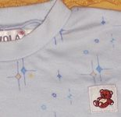
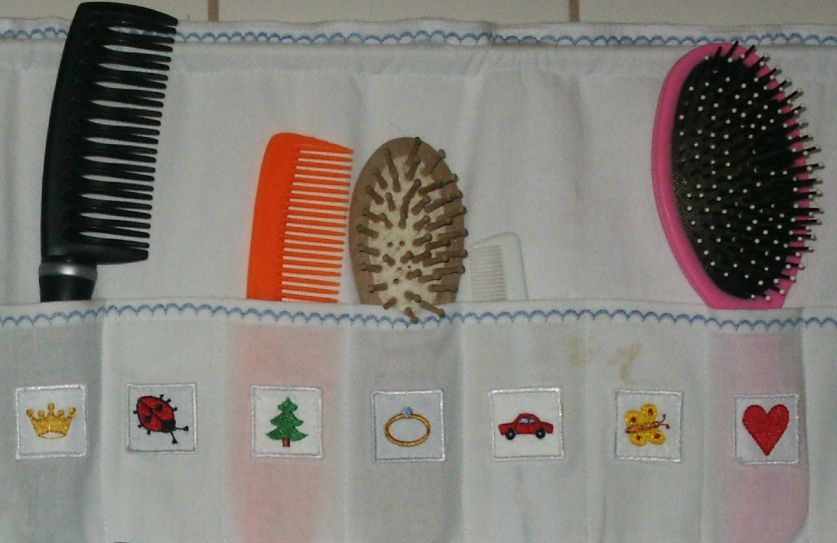
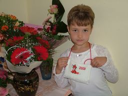
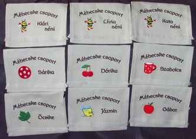
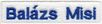

Figyelmükbe ajánljuk az alábbi honlapokat:
Utoljára frissítve: 2013.07.20.
| Köszöntjük az érdeklõdõ szülõket, nagyszülõket és óvónéniket! | ||
|  |
Jó szívvel kínáljuk felvarrható hímzett ovisjeleinket, melyekkel gyorsan, egyszerûen,
de tartósan és igényesen megjelölhetik a gyermek ruháit, pizsamáját, ruhatartó zsákját, tornazsákját,
vagy akár az ágynemût, kéztörlõt, fésûtartót is.
|
 |
|

|
Figyelmükbe ajánljuk ballagási tarisznyáinkat is, melyekkel a búcsúzást tehetik emlékezetesebbé. |
 |
|
Egyedi kéréseket is szívesen teljesítünk, pl. monogram vagy név hímzése felvarrható cimkére,
speciális gondozási igényû gyermekek saját jelei, stb. |
||
|
 |
Várjuk megrendelésüket!
Figyelmükbe ajánljuk az alábbi honlapokat:


Utoljára frissítve: 2013.07.20.